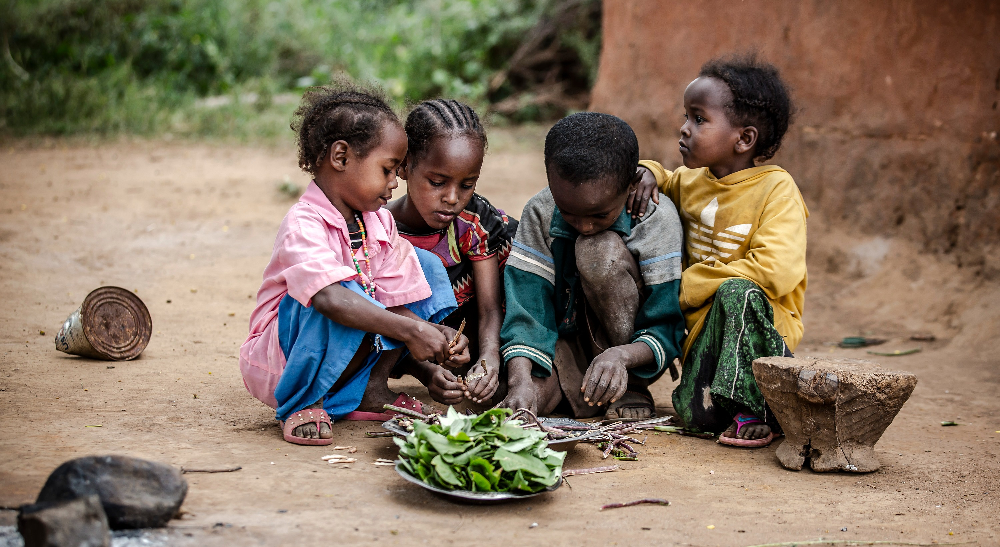
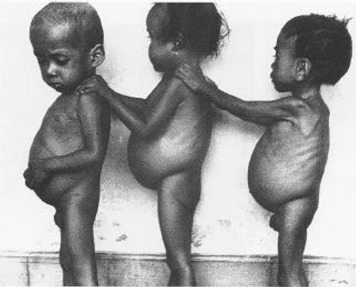

THE HISTORY
of Malnutrition
 Dr. Cicely Williams, who was dealing with African youngsters on the Gold Coast in 1932, originally described Kwashiorkor. Williams found a link between the prevalence of protein-energy malnutrition and the children's low-protein maize diet.
Dr. Cicely Williams, who was dealing with African youngsters on the Gold Coast in 1932, originally described Kwashiorkor. Williams found a link between the prevalence of protein-energy malnutrition and the children's low-protein maize diet.
Since the 1950s, the prevailing theory regarding child malnutrition has been that kids in underdeveloped nations don't get enough high-quality protein.
International conferences and United Nations (UN) agencies focused their programming efforts on protein malnutrition.It was believed that protein-energy malnutrition (PEM), or protein-calorie malnutrition as it was originally known, was primarily caused by dietary deficiency and could thus be prevented or treated by dietary interventions alone.
Types of Malnutrition
Kwashiorkor
a form of malnutrition, is a condition characterized by extreme protein deficiency and swelling in both extremities. Infants and toddlers are typically affected, most frequently between the ages of weaning and 5. Extreme cases of famine and areas of extreme poverty around the world are where the sickness is most prevalent. The World Health Organization identified it as a public health emergency in the 1950s. Due to the fact that infectious or digestive system disorders were typically reported as the reason of childhood deaths, there was a delay in its discovery. Since since, numerous relief initiatives have been made to get rid of it. Kwashiorkor is a condition characterized by extreme protein deficiency and swelling in both extremities. Infants and toddlers are typically affected, most frequently between the ages of weaning and 5.
Marasmus
resembles kwashiorkor, a condition caused by edematous starvation. A wasting condition (malnutrition without edema) is sometimes known as marasmus. Children often have reduced mid-upper arm circumference, low weight for height, and depleted body fat storage. Aside from thin, dry skin, a head that seems enormous in relation to the body, an appearance of weakness and emaciation, bradycardia, hypotension, hypothermia, and thin, shrunken arms, thighs, and buttocks with superfluous skin folds are other signs of the illness. The main difference between Kwashiorkor and Marasmus is that Kwashiorkor is predominantly a protein deficiency, while Marasmus is a deficiency of all macronutrients — protein, carbohydrates and fats.

